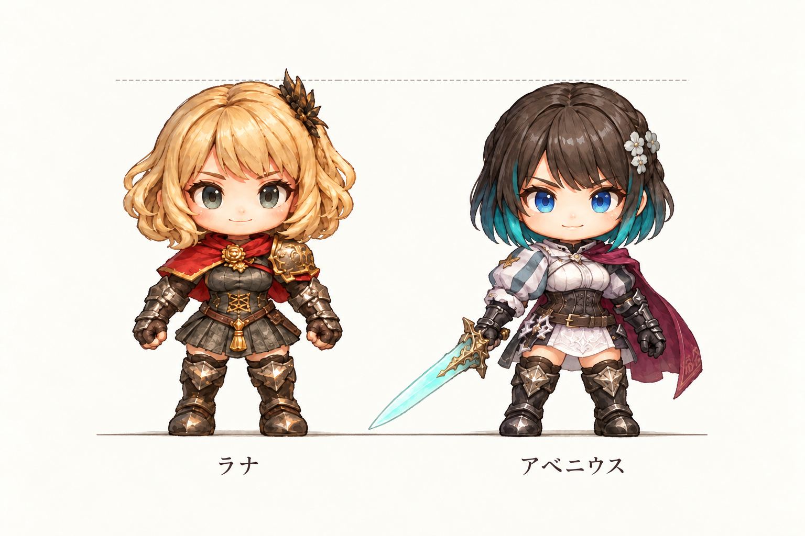

助っ人 02 · 待機基準絵
青緑のインナーカラー、蒼い瞳、閃光の剣。
本編で採用済みのラナの画像と比較。共通の縮尺と足元で表示します。
画像を読み込み中…
剣は本人の右手、花飾りは左側。左右反転は使っていません。
4マス先までの敵へ一瞬で移動し、先制攻撃を当てて元の位置に戻る。敵1体につき1回まで。
能力は仕様を記録した段階です。このページは待機絵の確認用で、本編への加入・戦闘・歩行は次の工程です。
